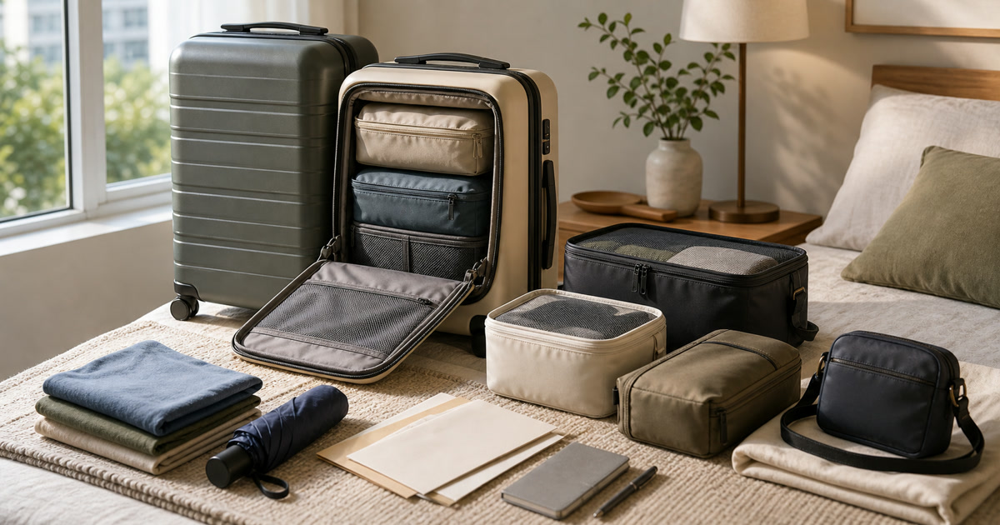

出國前先整理箱包系統：前開式行李箱、登機箱與收納袋
箱包系統要先用旅程天數與拿取頻率決定箱體，再比較前開式行李箱、登機箱與收納袋。

出國前買行李箱，最容易被外型、容量和照片裡的整齊感帶走。但真正會影響旅程的是：你要走幾天、移動幾次、哪些東西需要在機場或飯店門口快速拿到。前開式行李箱、登機箱、收納袋與隨身小包不是互相取代，而是一套拿取頻率的安排。
旅程天數決定箱體，不是照片決定
三天兩夜、五天四夜與十天以上旅行，需要的不是同一種箱體。先估衣物、鞋、盥洗、伴手禮與回程空間，再看是否需要前開或分層。
ENDUO恩多箱包、DW優選家官方直營店與戶外趣可放在箱體、登機箱與旅行用品裡比較；尺寸與限制仍以航空公司和商品頁公告為準。
Elite Fashion 編輯團隊的具體判斷是：用旅程天數決定箱體，用拿取頻率決定前開或分層。 這讓 ENDUO恩多箱包、DW優選家官方直營店—行李箱 與其他選項能被放回同一個生活問題裡比較，而不是只看單一商品照片。
下單前仍要回商品頁確認規格、尺寸、材質、活動、庫存與配送；若資訊不足，先暫緩，比把不確定的物品帶回家更成熟。
- 先確認使用位置與拿取頻率。
- 再看保存、清潔、線材或收納條件。
- 最後才比較品牌、活動與預算。
前開式適合高頻拿取，不是所有人都需要
前開式行李箱的價值，在於筆電、文件、外套或臨時用品需要快速拿取。若你的行程多在飯店一次展開，傳統箱體加收納袋也可能更簡潔。
不要只因為前開看起來方便就購買；先想自己會在哪裡、用哪隻手、開幾次箱。
Elite Fashion 編輯團隊的具體判斷是：用旅程天數決定箱體，用拿取頻率決定前開或分層。 這讓 ENDUO恩多箱包、DW優選家官方直營店—行李箱 與其他選項能被放回同一個生活問題裡比較，而不是只看單一商品照片。
下單前仍要回商品頁確認規格、尺寸、材質、活動、庫存與配送；若資訊不足，先暫緩，比把不確定的物品帶回家更成熟。
- 先確認使用位置與拿取頻率。
- 再看保存、清潔、線材或收納條件。
- 最後才比較品牌、活動與預算。
Elite 嚴選
收納袋要照使用時機分，不照顏色分
衣物袋、內衣袋、盥洗袋、電子配件袋與雨具袋應依使用時間排序。第一晚會用到的放上層，回程才用的放底層。
UD LAB、FULTON 富爾頓皇家晴雨傘與 S′AIME東京企劃可作為小包、雨具與隨身整理補充參考。
Elite Fashion 編輯團隊的具體判斷是：用旅程天數決定箱體，用拿取頻率決定前開或分層。 這讓 ENDUO恩多箱包、DW優選家官方直營店—行李箱 與其他選項能被放回同一個生活問題裡比較，而不是只看單一商品照片。
下單前仍要回商品頁確認規格、尺寸、材質、活動、庫存與配送；若資訊不足，先暫緩，比把不確定的物品帶回家更成熟。
- 先確認使用位置與拿取頻率。
- 再看保存、清潔、線材或收納條件。
- 最後才比較品牌、活動與預算。
登機箱要同時看尺寸、重量與輪子
登機箱不只看容量，還要看空箱重量、輪子滑順度、拉桿穩定與航空限制。若常轉機或搭大眾運輸，輪子和把手比多一點容量更重要。
航空公司對尺寸、重量、電池和液體等限制可能變動，出發前請以官方公告為準。
Elite Fashion 編輯團隊的具體判斷是：用旅程天數決定箱體，用拿取頻率決定前開或分層。 這讓 ENDUO恩多箱包、DW優選家官方直營店—行李箱 與其他選項能被放回同一個生活問題裡比較，而不是只看單一商品照片。
下單前仍要回商品頁確認規格、尺寸、材質、活動、庫存與配送；若資訊不足，先暫緩，比把不確定的物品帶回家更成熟。
- 先確認使用位置與拿取頻率。
- 再看保存、清潔、線材或收納條件。
- 最後才比較品牌、活動與預算。
常見錯誤：把所有備案都放進大箱
雨具、藥品、充電器、證件影本和第一天會穿的外套若都在大箱深處，遇到延誤或天氣變化就很麻煩。備案要放在能快速拿到的位置。
箱包系統的成熟感，來自每一件物品都知道自己該在旅程哪一刻被拿出來。
Elite Fashion 編輯團隊的具體判斷是：用旅程天數決定箱體，用拿取頻率決定前開或分層。 這讓 ENDUO恩多箱包、DW優選家官方直營店—行李箱 與其他選項能被放回同一個生活問題裡比較，而不是只看單一商品照片。
下單前仍要回商品頁確認規格、尺寸、材質、活動、庫存與配送；若資訊不足，先暫緩，比把不確定的物品帶回家更成熟。
- 先確認使用位置與拿取頻率。
- 再看保存、清潔、線材或收納條件。
- 最後才比較品牌、活動與預算。
出發前的箱包檢查
先確認航空尺寸與重量，再確認證件、充電、雨具、第一晚衣物和回程空間。最後才是造型與顏色。
價格、活動、規格、庫存、材質和配送請以下單前商品頁公告為準。
Elite Fashion 編輯團隊的具體判斷是：用旅程天數決定箱體，用拿取頻率決定前開或分層。 這讓 ENDUO恩多箱包、DW優選家官方直營店—行李箱 與其他選項能被放回同一個生活問題裡比較，而不是只看單一商品照片。
下單前仍要回商品頁確認規格、尺寸、材質、活動、庫存與配送；若資訊不足，先暫緩，比把不確定的物品帶回家更成熟。
- 先確認使用位置與拿取頻率。
- 再看保存、清潔、線材或收納條件。
- 最後才比較品牌、活動與預算。
同主題品牌參考
FAQ
前開式行李箱適合誰？
適合需要在機場、車站或飯店外快速拿取文件、筆電、外套或小物的人。
登機箱尺寸可以只看商品頁嗎？
不建議。商品頁是參考，航空公司最新尺寸與重量限制仍要出發前確認。
收納袋要買很多嗎？
不用先追求數量。依使用時機分成衣物、盥洗、電子、雨具與回程五類即可。
下一步建議
行李箱系統要先看旅程與拿取頻率，再看外型與容量。 先用本文順序縮小範圍，再回商品頁確認規格、價格、活動與庫存。
重要警語
本文含品牌／商品導購連結；商品資訊、價格、規格、活動與庫存請以商品頁公告為準。航空尺寸與限制以官方公告為準。
本文含品牌／商品導購連結；若你透過部分商品連結前往選購，Elite Fashion 可能取得合作收益。本文仍以編輯判斷與使用情境整理為主，價格、規格、活動與庫存請以商品頁公告為準。